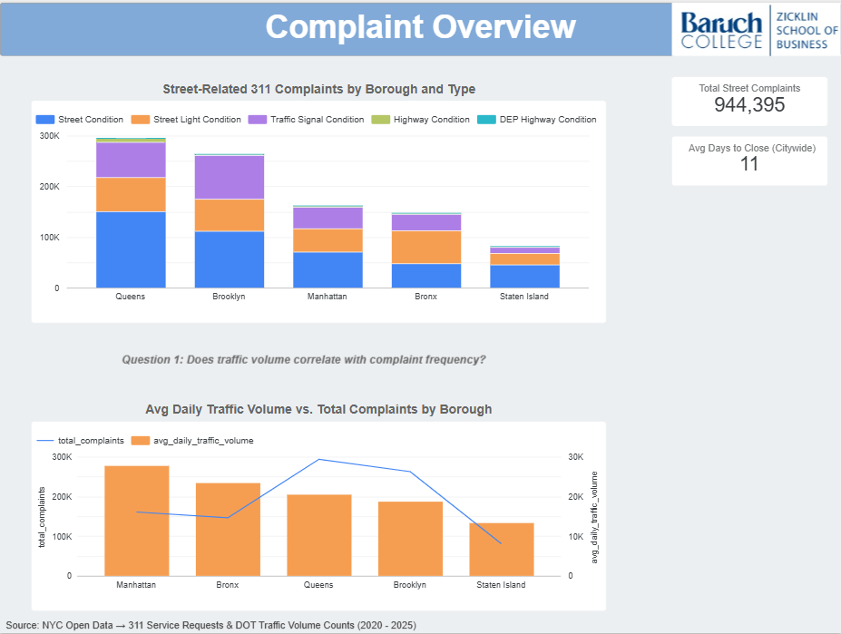
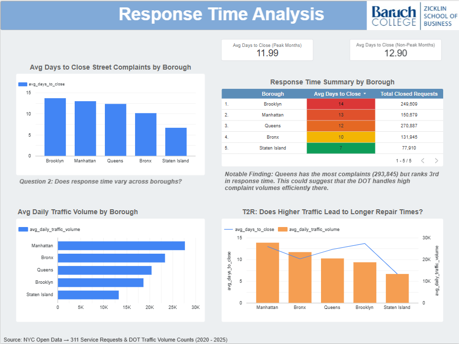
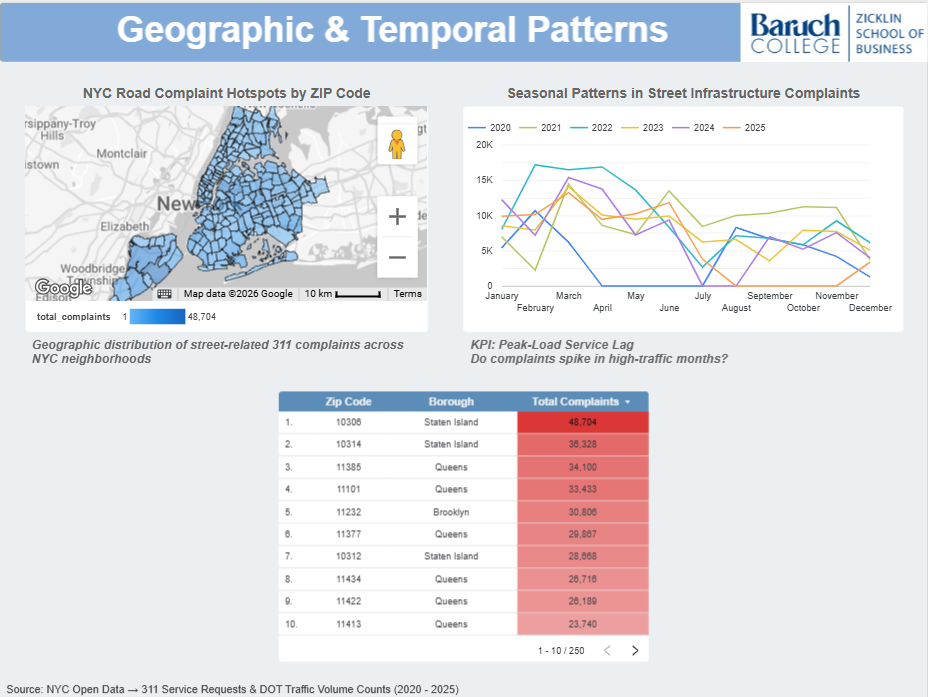

Analysis & Visualizations
Dashboard
The interactive Looker Studio dashboard below brings together all nine analytics queries into a unified view across three pages: Complaint Overview, Response Time Analysis, and Geographic & Temporal Patterns.
Dashboard Pages
Page 1: Complaint Overview
Addresses Question 1: Does traffic volume correlate with complaint frequency?

Key findings:
- Queens leads in total complaints (293,845), followed by Brooklyn (265,040)
- Manhattan has the highest average daily traffic volume (~28K) but ranks 3rd in total complaints, suggesting traffic volume alone does not linearly predict complaint frequency
- Street Condition and Street Light Condition account for the majority of complaints across all boroughs
Page 2: Response Time Analysis
Addresses Question 2 and the T2R KPI: Does response time vary across boroughs, and does higher traffic lead to longer repair times?

Key findings:
- Brooklyn has the slowest avg response time (14 days); Staten Island the fastest (7 days)
- Queens has the most complaints (293,845) but ranks 3rd in response time (12 days), suggesting the DOT handles high complaint volumes there relatively efficiently
- Peak-Load Service Lag KPI: Avg days to close during peak traffic months is 11.99 days vs. 12.90 days during non-peak months, response times are slightly faster during high-traffic periods, suggesting no significant maintenance lag driven by traffic volume alone
- The T2R dual-axis chart shows no consistent pattern between traffic volume and repair time across boroughs. Manhattan has the highest traffic but mid-range response time, while Brooklyn has mid-range traffic but the slowest repairs
Page 3: Geographic & Temporal Patterns
Addresses the Peak-Load Service Lag KPI: Do complaints spike in high-traffic months?

Key findings:
- ZIP code 10306 (Staten Island) has the highest total complaint count (48,704), followed by 10314 (Staten Island, 36,328) and 11385 (Queens, 34,100)
- Seasonal patterns show complaint peaks in spring/early summer months across most years
- 2022 and 2023 show notably higher complaint volumes than 2020–2021 (partial pandemic effect)
SQL Queries
All queries were run in BigQuery against the raul-cis-9440-spring2026.group_3_marts dataset. Each CREATE TABLE version persists results as a mart table used directly by Data Studio.
🔗 Full SQL file on GitHub or see
queries/milestone5_queries.sqlin this repository.
Query 1: Complaints by Borough and Problem Type
Aggregation: borough × problem type
Purpose: Baseline complaint counts per borough → the foundation for cross-mart comparison with traffic volume.
SELECT
l.borough AS borough,
p.problem_type AS problem_type,
COUNT(*) AS total_complaints
FROM `raul-cis-9440-spring2026.group_3_marts.fact_311service_request` f
INNER JOIN `raul-cis-9440-spring2026.group_3_marts.dim_location` l
ON f.location_id = l.location_key
INNER JOIN `raul-cis-9440-spring2026.group_3_marts.dim_problem` p
ON f.problem_id = p.problem_key
WHERE p.problem_type IN (
'Street Condition',
'Street Light Condition',
'Traffic Signal Condition',
'Highway Condition',
'DEP Highway Condition'
)
GROUP BY l.borough, p.problem_type
ORDER BY total_complaints DESC;Query 2: Avg Response Time (Days to Close) by Borough
Aggregation: borough
Purpose: Answers Q2: Does borough response time vary? Uses two CTE date joins to compute DATE_DIFF between created_date and closed_date.
WITH created_dates AS (
SELECT
f.unique_key,
f.location_id,
f.problem_id,
d.full_date AS created_date
FROM `raul-cis-9440-spring2026.group_3_marts.fact_311service_request` f
INNER JOIN `raul-cis-9440-spring2026.group_3_marts.dim_date` d
ON f.created_date_id = d.date_key
),
closed_dates AS (
SELECT
f.unique_key,
d.full_date AS closed_date
FROM `raul-cis-9440-spring2026.group_3_marts.fact_311service_request` f
INNER JOIN `raul-cis-9440-spring2026.group_3_marts.dim_date` d
ON f.closed_date_id = d.date_key
)
SELECT
l.borough,
COUNT(*) AS total_closed_requests,
ROUND(AVG(DATE_DIFF(cl.closed_date,
cr.created_date, DAY)), 2) AS avg_days_to_close,
MIN(DATE_DIFF(cl.closed_date,
cr.created_date, DAY)) AS min_days_to_close,
MAX(DATE_DIFF(cl.closed_date,
cr.created_date, DAY)) AS max_days_to_close
FROM created_dates cr
INNER JOIN closed_dates cl ON cr.unique_key = cl.unique_key
INNER JOIN `raul-cis-9440-spring2026.group_3_marts.dim_location` l
ON cr.location_id = l.location_key
INNER JOIN `raul-cis-9440-spring2026.group_3_marts.dim_problem` p
ON cr.problem_id = p.problem_key
WHERE p.problem_type IN (
'Street Condition', 'Street Light Condition',
'Traffic Signal Condition', 'Highway Condition', 'DEP Highway Condition'
)
AND cl.closed_date >= cr.created_date -- exclude data anomalies
GROUP BY l.borough
ORDER BY avg_days_to_close DESC;Query 3: Monthly Complaint Trends by Year
Aggregation: year × month
Purpose: Identifies seasonal patterns in street infrastructure complaints. Used in cross-mart comparison with monthly traffic volume (Query 5).
SELECT
d.year AS complaint_year,
d.month AS complaint_month,
COUNT(*) AS total_complaints
FROM `raul-cis-9440-spring2026.group_3_marts.fact_311service_request` f
INNER JOIN `raul-cis-9440-spring2026.group_3_marts.dim_date` d
ON f.created_date_id = d.date_key
INNER JOIN `raul-cis-9440-spring2026.group_3_marts.dim_problem` p
ON f.problem_id = p.problem_key
WHERE p.problem_type IN (
'Street Condition', 'Street Light Condition',
'Traffic Signal Condition', 'Highway Condition', 'DEP Highway Condition'
)
AND d.year BETWEEN 2020 AND 2025
GROUP BY d.year, d.month
ORDER BY d.year, d.month;Query 4: Avg Daily Traffic Volume by Borough
Aggregation: borough
Purpose: Computes borough-level average daily traffic volume from the 15-minute interval counts. Used as the traffic side of the cross-mart comparison.
SELECT
l.borough AS borough,
ROUND(AVG(daily.daily_vol), 0) AS avg_daily_traffic_volume
FROM (
SELECT
f.location_id,
d.full_date,
SUM(f.vol) AS daily_vol
FROM `raul-cis-9440-spring2026.group_3_marts.fact_traffic_volume` f
INNER JOIN `raul-cis-9440-spring2026.group_3_marts.dim_date` d
ON f.date_id = d.date_key
GROUP BY f.location_id, d.full_date
) daily
INNER JOIN `raul-cis-9440-spring2026.group_3_marts.dim_location` l
ON daily.location_id = l.location_key
GROUP BY l.borough
ORDER BY avg_daily_traffic_volume DESC;Query 5: Monthly Traffic vs. Complaints (Cross-Mart) ⭐
Aggregation: borough × year × month
Cross-mart: Joins fact_traffic_volume + fact_311service_request via conformed Dim_Date and Dim_Location.
Purpose: Core cross-mart query → computes a complaints_per_million_vehicles ratio to normalize complaint frequency against traffic load.
WITH monthly_traffic AS (
SELECT
l.borough,
d.year,
d.month,
SUM(f.vol) AS monthly_traffic_volume
FROM `raul-cis-9440-spring2026.group_3_marts.fact_traffic_volume` f
INNER JOIN `raul-cis-9440-spring2026.group_3_marts.dim_date` d
ON f.date_id = d.date_key
INNER JOIN `raul-cis-9440-spring2026.group_3_marts.dim_location` l
ON f.location_id = l.location_key
WHERE d.year BETWEEN 2020 AND 2025
GROUP BY l.borough, d.year, d.month
),
monthly_complaints AS (
SELECT
l.borough,
d.year,
d.month,
COUNT(*) AS monthly_complaints
FROM `raul-cis-9440-spring2026.group_3_marts.fact_311service_request` f
INNER JOIN `raul-cis-9440-spring2026.group_3_marts.dim_date` d
ON f.created_date_id = d.date_key
INNER JOIN `raul-cis-9440-spring2026.group_3_marts.dim_location` l
ON f.location_id = l.location_key
INNER JOIN `raul-cis-9440-spring2026.group_3_marts.dim_problem` p
ON f.problem_id = p.problem_key
WHERE p.problem_type IN (
'Street Condition', 'Street Light Condition',
'Traffic Signal Condition', 'Highway Condition', 'DEP Highway Condition'
)
AND d.year BETWEEN 2020 AND 2025
GROUP BY l.borough, d.year, d.month
)
SELECT
mt.borough,
mt.year,
mt.month,
mt.monthly_traffic_volume,
mc.monthly_complaints AS monthly_street_complaints,
ROUND(mc.monthly_complaints /
NULLIF(mt.monthly_traffic_volume, 0) * 1000000, 4)
AS complaints_per_million_vehicles
FROM monthly_traffic mt
INNER JOIN monthly_complaints mc
ON mt.borough = mc.borough
AND mt.year = mc.year
AND mt.month = mc.month
ORDER BY mt.borough, mt.year, mt.month;Query 6: Complaints by ZIP Code (Choropleth Map)
Aggregation: zip code × borough × problem type
Purpose: Provides ZIP-code-level complaint counts for the choropleth map in Looker Studio, enabling granular geographic analysis beyond borough level.
CREATE OR REPLACE TABLE
`raul-cis-9440-spring2026.group_3_marts.complaints_by_zip_code`
AS
SELECT
il.zip_code,
l.borough,
p.problem_type,
COUNT(*) AS total_complaints
FROM `raul-cis-9440-spring2026.group_3_marts.fact_311service_request` f
INNER JOIN `raul-cis-9440-spring2026.group_3_marts.dim_incident_location` il
ON f.incident_location_id = il.incident_location_key
INNER JOIN `raul-cis-9440-spring2026.group_3_marts.dim_location` l
ON f.location_id = l.location_key
INNER JOIN `raul-cis-9440-spring2026.group_3_marts.dim_problem` p
ON f.problem_id = p.problem_key
WHERE p.problem_type IN (
'Street Condition', 'Street Light Condition',
'Traffic Signal Condition', 'Highway Condition', 'DEP Highway Condition'
)
AND il.zip_code IS NOT NULL
AND il.zip_code != '10000' -- exclude invalid zip code
GROUP BY il.zip_code, l.borough, p.problem_type
ORDER BY total_complaints DESC;Query 7: Combined Traffic vs. Complaints by Borough (Cross-Mart) ⭐
Aggregation: borough
Cross-mart: Combines fact_traffic_volume + fact_311service_request.
Purpose: Single borough-level table for the dual-axis dashboard chart that directly addresses Q1.
WITH traffic AS (
SELECT
l.borough,
ROUND(AVG(daily.daily_vol), 0) AS avg_daily_traffic_volume
FROM (
SELECT f.location_id, d.full_date, SUM(f.vol) AS daily_vol
FROM `raul-cis-9440-spring2026.group_3_marts.fact_traffic_volume` f
INNER JOIN `raul-cis-9440-spring2026.group_3_marts.dim_date` d
ON f.date_id = d.date_key
GROUP BY f.location_id, d.full_date
) daily
INNER JOIN `raul-cis-9440-spring2026.group_3_marts.dim_location` l
ON daily.location_id = l.location_key
GROUP BY l.borough
),
complaints AS (
SELECT
l.borough,
COUNT(*) AS total_complaints
FROM `raul-cis-9440-spring2026.group_3_marts.fact_311service_request` f
INNER JOIN `raul-cis-9440-spring2026.group_3_marts.dim_location` l
ON f.location_id = l.location_key
INNER JOIN `raul-cis-9440-spring2026.group_3_marts.dim_problem` p
ON f.problem_id = p.problem_key
WHERE p.problem_type IN (
'Street Condition', 'Street Light Condition',
'Traffic Signal Condition', 'Highway Condition', 'DEP Highway Condition'
)
GROUP BY l.borough
)
SELECT
t.borough,
t.avg_daily_traffic_volume,
c.total_complaints
FROM traffic t
INNER JOIN complaints c ON t.borough = c.borough
ORDER BY t.avg_daily_traffic_volume DESC;Query 8: Traffic-to-Repair Correlation (T2R) by Borough ⭐
Aggregation: borough
Cross-mart: Joins complaints_vs_traffic_by_borough + response_time_by_borough
Purpose: Directly addresses the T2R KPI: Does higher traffic volume correlate with slower repair times? Computes two derived metrics: traffic_per_repair_day (traffic absorbed per repair day) and complaints_per_repair_day (repair throughput). Powers the dual-axis T2R chart on the Response Time Analysis dashboard page.
CREATE TABLE IF NOT EXISTS
`raul-cis-9440-spring2026.group_3_marts.traffic_to_repair_correlation`
AS
SELECT
t.borough,
t.avg_daily_traffic_volume,
t.total_complaints,
r.avg_days_to_close,
r.total_closed_requests,
-- T2R metric: does higher traffic correlate with longer repair time?
ROUND(t.avg_daily_traffic_volume /
NULLIF(r.avg_days_to_close, 0), 2) AS traffic_per_repair_day,
-- Complaint resolution rate: complaints per day to close
ROUND(t.total_complaints /
NULLIF(r.avg_days_to_close, 0), 2) AS complaints_per_repair_day
FROM `raul-cis-9440-spring2026.group_3_marts.complaints_vs_traffic_by_borough` t
INNER JOIN `raul-cis-9440-spring2026.group_3_marts.response_time_by_borough` r
ON t.borough = r.borough
ORDER BY avg_daily_traffic_volume DESC;Query 9: Peak-Load Service Lag KPI ⭐
Aggregation: traffic period (Peak vs. Non-Peak months)
Cross-mart: Joins fact_traffic_volume + fact_311service_request + dim_date + dim_problem
Purpose: Directly addresses the Peak-Load Service Lag KPI: Does avg time to close 311 complaints increase during months with above-average traffic volume? Peak months are defined as months where total traffic volume exceeds the overall monthly average across 2020–2025.
Finding: Response times are slightly faster during peak traffic months (11.99 days) vs. non-peak (12.90 days), suggesting no significant maintenance lag during high-traffic periods.
CREATE TABLE IF NOT EXISTS
`raul-cis-9440-spring2026.group_3_marts.peak_load_service_lag`
AS
WITH monthly_avg_traffic AS (
SELECT
d.year, d.month,
SUM(f.vol) AS monthly_traffic_volume
FROM `raul-cis-9440-spring2026.group_3_marts.fact_traffic_volume` f
INNER JOIN `raul-cis-9440-spring2026.group_3_marts.dim_date` d
ON f.date_id = d.date_key
WHERE d.year BETWEEN 2020 AND 2025
GROUP BY d.year, d.month
),
annual_avg_traffic AS (
SELECT AVG(monthly_traffic_volume) AS avg_monthly_traffic
FROM monthly_avg_traffic
),
peak_months AS (
SELECT
mt.year, mt.month, mt.monthly_traffic_volume,
CASE
WHEN mt.monthly_traffic_volume > aat.avg_monthly_traffic
THEN 'Peak'
ELSE 'Non-Peak'
END AS traffic_period
FROM monthly_avg_traffic mt
CROSS JOIN annual_avg_traffic aat
),
response_times AS (
SELECT
cd.year, cd.month,
DATE_DIFF(cl.full_date, cd.full_date, DAY) AS days_to_close
FROM `raul-cis-9440-spring2026.group_3_marts.fact_311service_request` f
INNER JOIN `raul-cis-9440-spring2026.group_3_marts.dim_date` cd
ON f.created_date_id = cd.date_key
INNER JOIN `raul-cis-9440-spring2026.group_3_marts.dim_date` cl
ON f.closed_date_id = cl.date_key
INNER JOIN `raul-cis-9440-spring2026.group_3_marts.dim_problem` p
ON f.problem_id = p.problem_key
WHERE p.problem_type IN (
'Street Condition', 'Street Light Condition',
'Traffic Signal Condition', 'Highway Condition', 'DEP Highway Condition'
)
AND cl.full_date >= cd.full_date
AND cd.year BETWEEN 2020 AND 2025
)
SELECT
pm.traffic_period,
COUNT(*) AS total_requests,
ROUND(AVG(CAST(rt.days_to_close AS FLOAT64)), 2) AS avg_days_to_close,
MIN(rt.days_to_close) AS min_days_to_close,
MAX(rt.days_to_close) AS max_days_to_close
FROM response_times rt
INNER JOIN peak_months pm
ON rt.year = pm.year AND rt.month = pm.month
GROUP BY pm.traffic_period
ORDER BY pm.traffic_period;Aggregation Summary
Per the milestone requirements, the queries above include at least two distinct aggregation types:
| Query | Aggregation type |
|---|---|
| Q1 | By borough + complaint type |
| Q2 | By borough (response time) |
| Q3 | By year + month (temporal) |
| Q4 | By borough (traffic volume) |
| Q5 | By borough + year + month (cross-mart) |
| Q6 | By ZIP code + borough + type (geographic) |
| Q7 | By borough (cross-mart combined) |
| Q8 | By borough (T2R derived metrics, cross-mart) |
| Q9 | By traffic period → Peak vs. Non-Peak (cross-mart) |